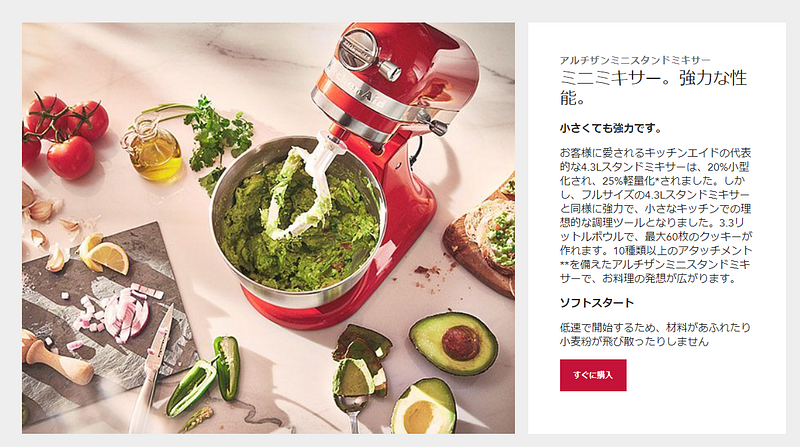

2021年買ってよかったもの
2021年買ってよかったもの
今年も色々買ったので、今年買ってよかったものリストをまとめました。
一軒家
家を買っておいて「実は気に入ってない」なんてことになってたらちょっと辛いですが、幸い今年買って一番よかったのはどう考えても一軒家、現在の我が家です。
築13年の中古ですが、キレイな状態で買えたこと、首都圏ではありつつも住宅地のはずれにあり、目隠しが効いていてまわりの目も気にならない環境なこと、子供の学校が近いこと… 様々な点において自分たちのニーズに合致していて本当にいい買い物をしました。詳しいことは以前書いたエントリにだいたい書いてあります。
前回の家購入と引っ越しの話に割と反響があったのでその後のレポートです。といっても本当にレポートで特に落ちはないです。あしからず。lestrrat.medium.com
正直なところを言えば、敷地が旗竿地であるため駐車しづらいことや自治体としては以前住んでいた東京都世田谷区のほうが色々と良かった気はしているのですが、プラス面が大きすぎてもはや問題にならない、という感じです。
WFHしてるときに子供がいてもイライラしないだけでもプライスレス
Kitchen Aid スタンドミキサー
今年の5月からサワードウを作り始めて、半年で30kg近くの小麦粉をこねてきたけど、そのうちのほとんどはこの機械によるものです。シンプルな形なのに強力なモーターを駆使してあっというまにぐちゃぐちゃの小麦粉をグルテンの塊に変えてくれます。

粉ものを混ぜる、捏ねる、この思っている以上に手間と力のかかる作業が全て機械の力で解決されてしまう。いやぁ… これ無しでパンを作るとか、できるならそれは尊いけど僕は結構です。とにかく最高です。
捏ねる以外の用途にも色々使えるみたいなので今後はそちらも使っていきたいとは思いますが、ともかくパンの生地を捏ねるためだけの道具だったとしても最高の道具です。人間の叡智が詰まってる。
ちなみにサワードウを作る、みたいな比較的大きいサイズのパンを作ったりする場合は、台所事情が許すなら本場サイズの一番大きいスタンドミキサーを買った方がいいと思います。4.3Lのものだと500g+350mlの生地を捏ねているときに生地がドウフックの根本のほうに絡みつきます。もっと深さがあれば問題ないはず。（なので正直買い替えたい気持ちがある）
【日本国内正規輸入品】 キッチンエイド KitchenAid 3.5QTスタンドミキサー+フードグラインダー+注入用カバー 特別セット KSM3512FGHT…amzn.to
RULO
Panasonicのお掃除ロボットのRULO。ずっとルンバ派だったのですが、一軒家に引っ越したタイミングで最初の1台を購入し、その後ルンバが本格的に壊れたので2台目も購入しました。
ルンバが「なんか置いておくと勝手に掃除してくれる」をつきつめたものだとすると、RULOは若干繊細すぎる感じはします。なんか条件によってはおうちに帰れないことも何回かありました（多分ドックのまわりに充分なスペースがないとそういうことが起きる）。
しかし、掃除自体はパワフルかつ正確であり、我々の持っていた旧式800番台のルンバでは時々スタックしていた小さな段差をものともしなかったり、光学センサーを備えているため特になんの指示もなく階段やこあがりのような段差をよけたりしてくれるため大変日本家屋と相性がいいと思います。
アプリも最初の使いにくささえ超えてしまえば状況把握がしやすい感じでかなりよいです。お掃除マップなんかは部屋のどのあたりを気にすればいいのかわかって、かなりうれしい。
また、ルンバより部屋の隅の掃除に強い気がします。まぁこのあたりはロボット掃除機全般の特徴として完璧というわけにはいきませんが。
ともあれ、お値段も結構張るので万人に「絶対に買いなよ！」は言えないのですが、前述の通り日本家屋用に作ってある気がするので興味があるならおすすめできますよ、という感じですね。
レーザーSLAM採用で家の間取りを正確に認識し、今まで見逃していた場所のゴミまで取りきる(※室内環境、汚れの種類や量により、検知・集じんできない場合があります。) レーザーSLAMによりルート走行も進化。…amzn.to
スチームオーブンレンジ
引っ越しと同時に以前まで使っていたレンジが壊れたので買い替えたものです。買ったのは偶然ですが、使ってみたらすばらしい。特に以下の機能が我が家的にはうれしかった
- 揚げ物のあたため（カリっとあたたまる）
- 300℃まで温度を上げることが可能（パンを焼くのにちょうどいい）
また庫内の汚れもつきにくく、いままで使ってきたレンジの中で最強の部類だと思います。
パナソニック オーブンレンジ スチーム ビストロ 30L 2段 スイングサーチ赤外線センサー ホワイト…amzn.to
ガスコンロ
正確には我々が購入したのではなく、購入した家についてきました。以前住んでいた方が、家を手放す1年ほど前に買い替えた商品らしく、新品同様で手に入りました。
ぶっちゃけ我が家ではコンロは火が付けばいい。そう思っていました。ところが、自分たちでは絶対に買わなかったであろうこの商品、いざ手に入れてみて使い込んでみると、もうこれ無しでは生活できないレベルになってしまいました。
特にうれしいのが「自動炊飯」「自動湯沸かし」「自動温度キープ」の三つの機能。
自動炊飯は読んで字のごとし、鍋炊きのごはんが全自動でできます。うちは炊飯器を使わずずっと鍋炊きでご飯を炊いているのでこれは本当にうれしい。
自動湯沸かしはやかんをかけて、自動湯沸かしボタンを押しておけば、お湯が沸騰したときに勝手に火が消えてくれるという優れもの。やかんをつけっぱなしにしてお湯がなくなってから気づくというようなこともなくなります。
そして3人の男の子のいる我が家で重宝しているのが自動温度キープ。揚げ物が… はかどる…！ 油の入った鍋をコンロにかけて、180℃、と設定しておけば勝手に火が弱くなったり強くなったりして、180℃をキープしてくれる！魔法か！特に温度に注意しなくても唐揚げもガンガンあげられる！すごい！すてき！
あと、ガラストップというのも地味によくて、これだけ元がピカピカだと嫌でも掃除しないといけない気にさせられるため、必然的にコンロ回りがキレイになる、というのもいいですね。
どれもこれもこのコンロがなくても手動でできるけど、とにかく楽… 人間の叡智すごい。
【取替交換付き商品に含まれるもの】 ・商品本体代金 ・現地調査費用 ・標準取替交換費用 ・廃棄処分費用 ※標準取替交換とは:現在設置してあるガスビルトインコンロから新しいガスビルトインコンロへ、特別な加工などをせずにできるもの。…amzn.to
ごとくやバーナーリングなどを小さくしてお手入れしやすくなりました。 料理好きの方におすすめ！ 多機能なのでレパートリーが広がります。ココットを使って、底面は、両側に油が流れるウェーブ形状を採用。余分な油を落とし、ヘルシーに仕上がります。…amzn.to
ガジェット
新しいガジェット類はあんまり買わなかったけど、以前から持っていて買い足したものも含めると、以下はなかなかよかったです
Amazon.co.jp: AfterShokz スポーツ イヤホン Aeropex Solar Red 骨伝導 イヤホン マイク AS800 [並行輸入品] : 家電＆カメラamzn.to
2020年3月くらいから言い続けてますが、相変わらずAeropexは愛用してます。1日に10時間使っているとだいたい半年から1年でへたってきますが、まぁこれは使い方が悪い気がするので、普通の使い方だったら多分2～3年もつはずです。
2020年がはじまってまだ３ヶ月程度しか経っていませんが、個人的な「今年買って良かった商品」ベストワン、ベストオブベストが決定したのでお知らせいたします。それがこちら AfterShokz Aeropex 骨伝導イヤホン。lestrrat.medium.com
もっと安いもので、というと自分は実はAfterShokzではなくオーム社のこの廉価版骨伝導イヤホンを使っています。Bluetoothが若干微妙な気がするのが玉に瑕ですが、会議とかの通常使いなら特に問題ない感じですね。
【 特 長 】 ● 耳をふさがないから、周囲音もしっかり聞こえます ● 高音質のステレオサウンドを発する、両耳式骨伝導イヤホン ● USB充電式（microUSB給電） 連続再生6時間・連続待受240時間 ※使用環境により異なります ●…amzn.to
あとは手元を写すカメラが欲しくて以下の2商品を買ったりしてますが、まだあんまり感想を言えるほど使い込んでないです。GoProはブラックフライデーで買ったのでもっと全然お安く買いました。
Amazon.co.jp: IPEVO V4K PRO 超 USB 書画カメラ AI音声向上マイク搭載。教室での視覚化、オンライン指導、在宅勤務、ストリーミングに最適。ノイズキャンセリング機能でクリアな音声を実現。 : パソコン・周辺機器amzn.to
【2年無料保証】GoPro HERO10 Black アクションカメラ ゴープロ 人気アクションカム 革新GP2…amzn.to
あとこれを書いている時点ではまだ届いていないですが、Pixel Stand2が楽しみです…
Wirelessly charge your device with the same power you'd expect from a wired charger. The nearly silent built-in fan…store.google.com
マンガ
今年自分が「発見」した（前からあったのかもだけど、自分が知ったり、買ったりしたのが今年、という意味）マンガでかっておもしろかったのはこのあたり
来年はもう少し外出できるようになっているといいですね。